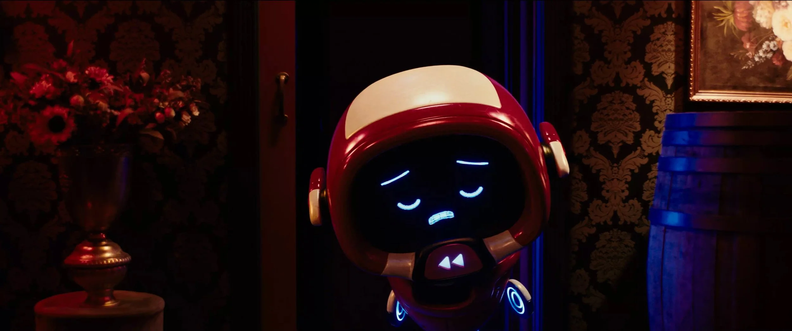
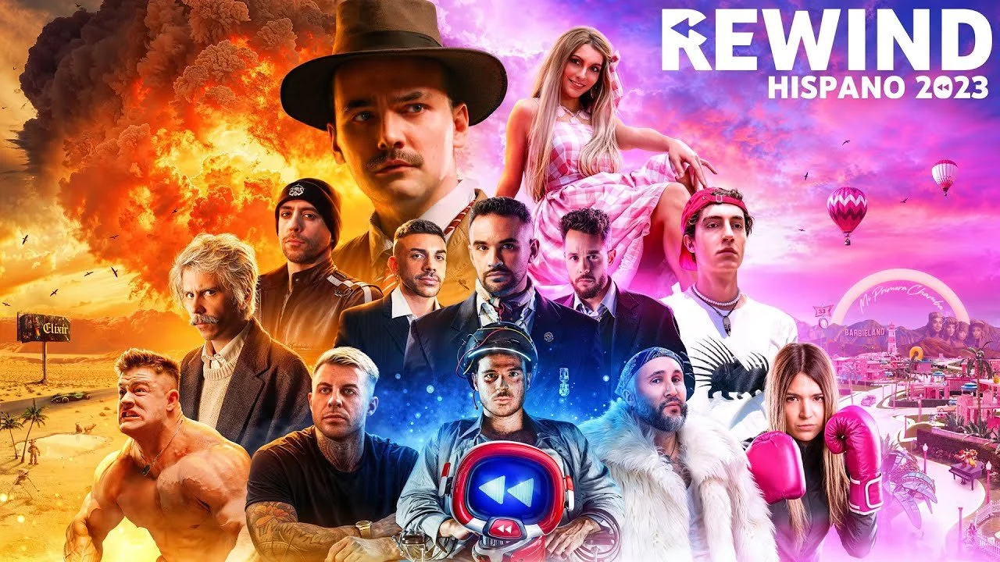
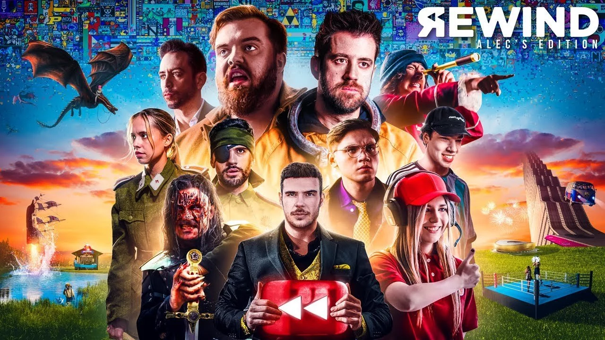
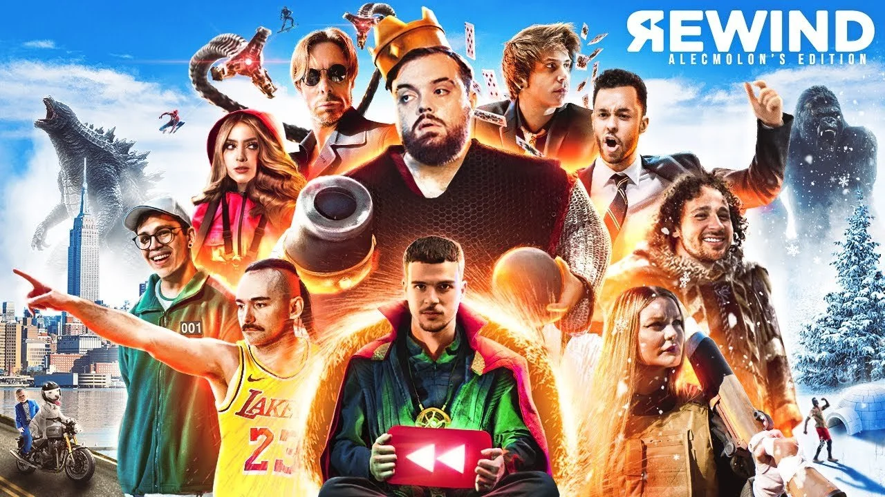
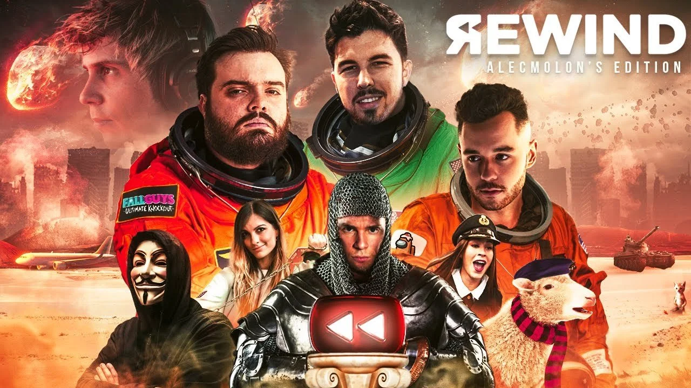

Un cortometraje anual que repasa lo más destacado del año en la comunidad hispanohablante: memes, música, videojuegos y cultura digital.




Esta edición reunió a más de 300 personas en su producción y se estrenó en los cines Callao de Madrid, con menciones en medios como El País, Marca y Movistar.